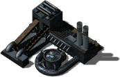
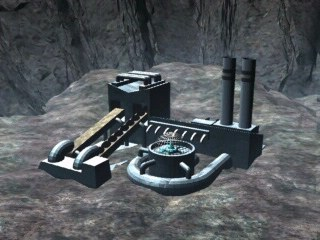

Мега-Шахта


Панель информации в игре
- Энергии треб.:
- 700
- Энергия (HP):
- 3250
- Макс. число рабочих:
- 120?
- Время постройки:
- 72 с?
- Добыто ресурсов:
- Экстракт 1000
- Железо 750
- Уголь 750
- Титан 500
Затраты: Экстракт 4000 Железо 2500 Уголь 2000 Титан 1500
Описание
Это современный аналог стандартной земной шахты. Благодаря глубокому бурению, здесь извлекаются ископаемые с очень больших глубин. В результате скорость добычи в несколько раз больше, чем на обычной шахте. Однако Мега-Шахты очень быстро истощают залежи ископаемых. Их не следует размещать слишком близко друг от друга.
Связанное
- Требует
- Пионер, Мега-шахта
- Исследуется проектом
- Мега-шахта
Параметры конфигурации, которых нет в игре (9)
SIGHT- 4
BUILDER- 120
TRACE- 2
HEIGHT- 1
COMPONENT_QUANT- 2
SPRITE_QUANTITY- 2
TYPE- R_hKOPALNIA
AIBLD- AIBLD_MINE1
AREA- 1, 1, 1, 0, 0, 0, 0, 0, 0, 0, 1, 1, 1, 0, 0, 0, 0, 0, 0, 0, 1, 1, 1, 0, 0, 0, 0, 0, 0, 0, 1, 1, 1, 0, 0, 0, 0, 0, 0, 0, 1, 1, 1, 0, 0, 0, 0, 0, 0, 0, 0, 0, 0, 0, 0, 0, 0, 0, 0, 0, 0, 0, 0, 0, 0, 0, 0, 0, 0, 0, 0, 0, 0, 0, 0, 0, 0, 0, 0, 0, 0, 0, 0, 0, 0, 0, 0, 0, 0, 0, 0, 0, 0, 0, 0, 0, 0, 0, 0, 0